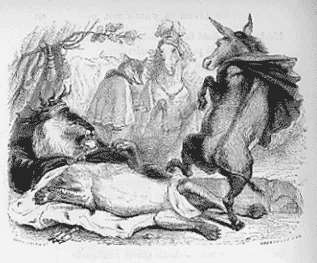

Force est de le déplorer: plus le niveau culturel du discours public est en berne, plus enfle la manie de métaphoriser à outrance. Cette appétence serait à la rigueur supportable si la métaphore correspondait à la situation à laquelle on l’applique. Malheureusement, il arrive trop souvent que ce ne soit pas du tout le cas. J’en veux pour preuve le « parti pris » de Christophe Jakubyszyn, sur la chaîne d’informations en continu LCI, hier soir 10 juillet 2019.
Dans sa brève intervention, dont référence en note, ci-dessous 1, le journaliste qualifie de « coup de pied de l’âne » l’initiative de Cédric Villani, qui, à une heure de la proclamation des résultats, déclarait publiquement:
Ce qui était annoncé de longue date est maintenant acquis: il est clair que je n’obtiendrai pas d’investiture de l’appareil de LREM.
A quel contexte littéraire le journaliste de LCI fait-il allusion? Si nombreux sont les Français cultivés capables de reconnaître le style de La Fontaine, ils sont plus rares à être en mesure d’identifier la référence précise de l’emploi de l’expression. Non, ce n’est pas dans « Les animaux malades de la peste » qu’elle figure, mais dans le dernier quatrain du « Lion devenu vieux »:
Il attend son destin, sans faire aucunes plaintes, Quand, voyant l'Âne même à son antre accourir: Ah! c'est trop, lui dit-il, je voulais bien mourir; Mais c'est mourir deux fois que souffrir tes atteintes.

Je demande donc: Monsieur Jakubyszyn a-t-il pris soin de vérifier sa source, avant de rédiger son « parti pris »? On peut en douter. Et ce pour deux raisons majeures:
1.Il est pour le moins cocasse que la métaphore de « l’âne » soit appliquée à un génie de la mathématique – le ci-devant savant Cédric Villani. 2.Quant à celle du « lion mort », non exprimée par le journaliste, mais explicite chez La Fontaine, le moins qu’on puisse en dire est qu’elle est en totale inadéquation avec Benjamin Griveaux qui, loin d’être à l’agonie, est au contraire bien vivant et… victorieux!
A la décharge du journaliste, on tiendra compte du fait qu’il est, comme beaucoup, tributaire d’une doxa publique indigente, qui n’a retenu que la première partie de l’expression – « le coup de pied de l’âne » - et oublié la deuxième - au « lion devenu vieux ». A preuve, entre autres, cette définition représentative que l’on trouve sur Internet:
L'injure, le coup du faible et lâche donné au fort mis dans l'impossibilité de se défendre 2.
Mis en ligne sur Academia.edu, le 11 juillet 2019
1Voir la vidéo #PartiPris #Politique @chrisjaku: « « Paris, coup de pied de l’âne ». ↩
2 Repris du site Les expressions françaises décortiquées. ↩